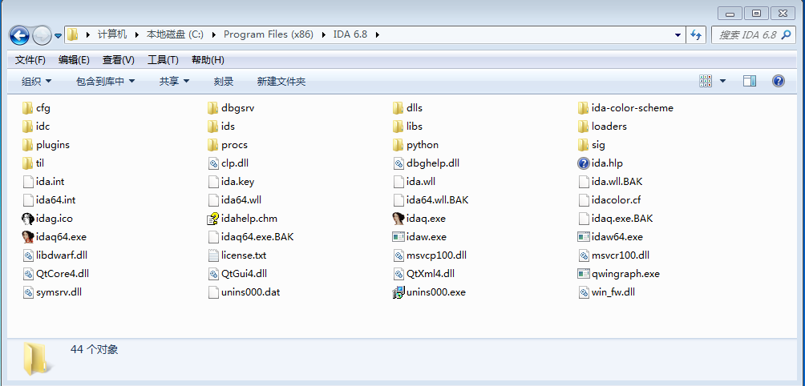
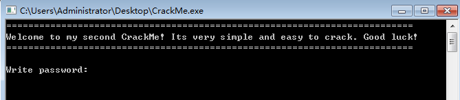
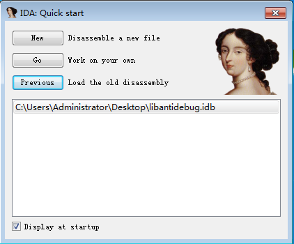
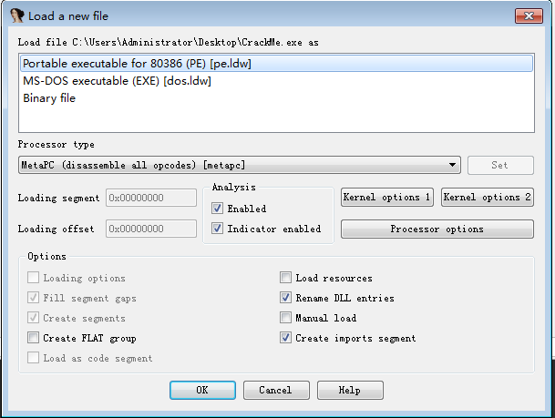

环境: Windows7 x64+IDA Pro 6.8
1.IDA目录
Windows下的安装此处从略,先来介绍一下IDA的目录结构,如下图所示:

- cfg:该目录包含IDA的各种配置文件,如IDA的基本配置文件ida.cfg,GUI配置文件idagui.cfg以及文本用户界面接口配置文件idatui.cfg.
- idc:包含IDA内置脚本语言IDC所需的所有核心文件.
- ids:包含符号文件,二进制文件所引用的共享库内容便是通过这些符号文件来描述.
- loaders:包含IDA扩展,在文件处理过程中用于识别和分析已知的文件格式,如ELF和PE文件.
- plugins:插件目录.
- procs:包含各种处理器模块,提供机器语言到汇编语言的转换.
- sig:包含现有代码的签名,用于IDA模式匹配.这些签名由IDA快速库鉴定和识别技术生成(FLIRT:Fast Library Identification and Recognition Technology)
- til:包含类型库信息,IDA以此来记录各种编译器器库的数据结构布局.
2.IDA加载文件
首先我们以Windows下的PE文件为例来说明.
为此我选择了crackmes.de网站上的一个简单的CrackMe,你可以去原网站下载,下载地址为very_easy_crackme_for_newbies
,如果失效,你可以来这里下载:CrackMe_v2.zip.
解压后,将会得到一个exe文件,为了方便,我将其重命名为CrackMe.exe,运行后界面如下:

打开IDA之后,会出现如下界面:

New用于新打开一个要反汇编的文件,Go将会打开IDA的主界面,Previous将会打开上一次打开的文件,再下发的列表框中列出的是曾经打开过的文件,双击即可进入.
这里我们点击New然后载入CrackMe.exe,将会出现如下所示界面:

IDA已经自动识别出加载的文件为PE文件,IDA也将其识别位MS-DOS格式的文件,这是因为PE是MS-DOS文件的扩展格式.最后一个Binary file文件是IDA加载所有文件都会显示的一项.
Binary模式提供最低级别的方式来加载任何二进制文件.
一般的,我们保持默认即可.
先写到这里.........有事情要忙了...........改天继续写..
3.IDA桌面